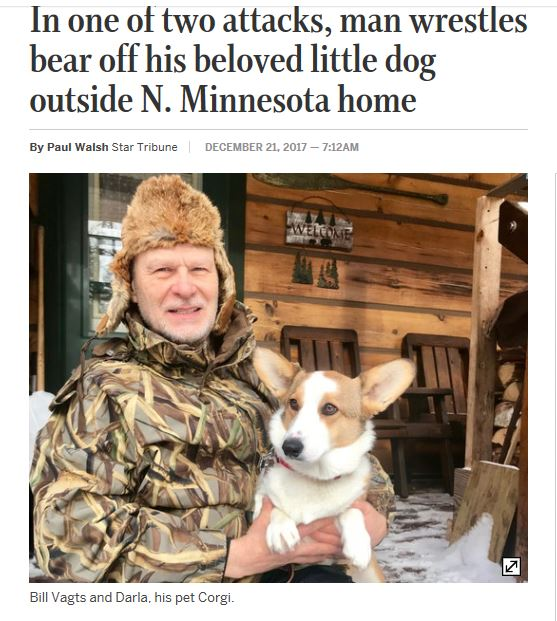
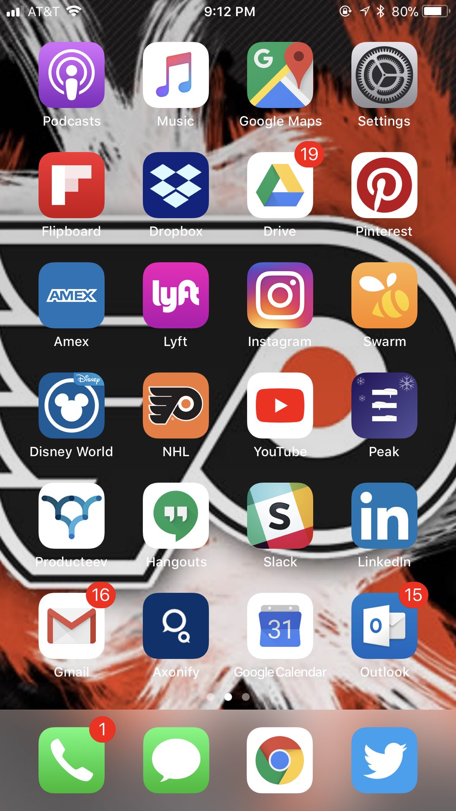
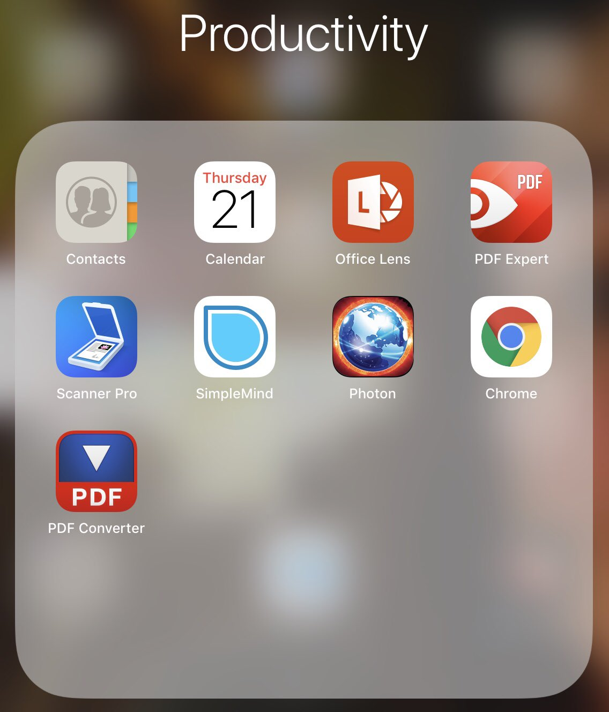

- . @jamielouster -- something you might be interested in. #lrnchat https://twitter.com/lrnchat/status/943881628396539904 …
- lrnchat on Twitter: "Tonight 21 December! The annual #lrnchat holiday "Appy Hou… https://twitter.com/i/web/status/943881628396539904 …, see more http://tweetedtimes.com/v/3480?s=tnp
- lrnchat on Twitter: "Tonight 21 December! The annual #lrnchat holiday "Appy Hou… https://twitter.com/i/web/status/943881628396539904 …, see more http://tweetedtimes.com/v/3485?s=tnp
- Howdy #lrnchat! JD in Orlando, FL. LearnGeek, speaker, writer. Taking in all of the “ambitious” projections for L&D in 2018. 🤔 https://twitter.com/lrnchat/status/944017419949035525 …
- My passion’s rehumanizing learning 1 activity at a time.. currently looking for the #NextBigThing that’ll see me into #retirement #lrnchat
- @JaneBozarth And corgis learning ukelele? #lrnchat
- A0: I learned that our donkey will steal pineapple peels from the compost pile. #SweetTooth. #lrnchat
- Help Us Build the Doc! Please add to the 2017 "#lrnchat Appy Hour" Google Spreadsheet https://docs.google.com/spreadsheets/d/1rAEG7FM-btTonVIkf3Wips1Xz3ru9tpUNEt43KK-s8s/edit?usp=sharing …
- I learned about a dog rescue in Northern Minnesota #lrnchat pic.twitter.com/LJnw5udJkw
- @kelly_smith01 Is that what I think that is? #lrnchat
- A1) Productivity (calendar, email, tasks, docs) followed by social #lrnchat https://twitter.com/lrnchat/status/944019833733173248 …
- A man rescued his corgi from a bear - not Yogi #lrnchat https://twitter.com/JaneBozarth/status/944020312290742272 …
- #lrnchat A0 The other day a webinar I managed went live.. it had to do with suicide prevention. This was a resource https://vimeo.com/175761640
- @kelly_smith01 I bet that's not how the corgi tells it #lrnchat
- Note: Help us build tonight's takeaway at this Google Spreadsheet https://docs.google.com/spreadsheets/d/1rAEG7FM-btTonVIkf3Wips1Xz3ru9tpUNEt43KK-s8s/edit?usp=sharing … #lrnchat
- A2) Shifted from private bookmarking to public curation apps #lrnchat https://twitter.com/lrnchat/status/944021491515092993 …
- A2) Have tried dozens of task management apps, always come back to the same simple app #lrnchat https://twitter.com/lrnchat/status/944021491515092993 …
- Same. Google everything - unless I absolutely have to use Word or PowerPoint #lrnchat https://twitter.com/urbie/status/944022042327707648 …
- Well here's a question: Why are 7 people looking at tonight's google doc, but not adding anything to it? https://docs.google.com/spreadsheets/d/1rAEG7FM-btTonVIkf3Wips1Xz3ru9tpUNEt43KK-s8s/edit?usp=sharing … #wecanseeyou #lrnchat
- Do you have some favourite apps device/pc? New this year. Those you’ve abandoned. We want to know. #lrnchat https://twitter.com/lrnchat/status/944023029880934400 …
- @EdTechMason told me about https://twitter.com/edtechteacher21/status/943501810114981888 ….. thinking hard about getting the cert #lrnchat https://twitter.com/jd_dillon/status/944022340865753088 …
- A3) PowerPoint - all types of uses. #lrnchat https://twitter.com/lrnchat/status/944023335452766208 …
- RT @kelly_smith01 Q3) I have used pdf doc maker to read articles off line #lrnchat
- RT @kelly_smith01 Q3) I have used pdf doc maker to read articles off line #lrnchat
- @Tracy_Parish Is it weird that I have Instagram on my tablet, but I never use it? I have to surrender the tablet to my wife periodically so she can use Instagram. :-( #lrnchat
- @InaGuddle I remember early on that I used to go looking for new apps/games every Saturday morning... #lrnchat
- @InaGuddle I find myself better at saying "I wish there was an app for that" and then going to see if there IS one -- and there usually is #lrnchat
- #lrnchat A3b What I do different tho is many are marketed for K-12 use. #ThingLink #ExplainEverything #Kahoot I use to #make ideas visible
- @SimonBlairTrain I see you added Overdrive to the Google Doc -- I like it, too. Recently rediscovered our great little local branch library #lrnchat
- @rabbitoreg Whatever. In general. Or 'tools'. Or sites. #lrnchat
- A4) Google Calendar - otherwise how will I know what city I'm supposed to go to? 🤔😳 #lrnchat https://twitter.com/lrnchat/status/944025189221679105 …
- @JaneBozarth I just find the app store so crowded and full of crap. Then get annoyed when I download something and find it is not as advertised... #lrnchat
- #lrnchat A4a It really depends on my moment of need. Like figuring out that #LumaFusion does this.. https://www.instagram.com/p/Bc0e8RpA2TNLdowwF170a_UauFoxBVl0SRq0ug0/?taken-by=wiredless …
- @simmons_m I see you added OneNote to the Google Doc. I need to spend more time with that. Suspect I would use it if I knew more. #lrnchat
- @InaGuddle Yeah you know the early days weren't so bad for that. Now I do listen to what friends are using --- also why we do this Appy Hour chat every year! #lrnchat
- Arriving late to #lrnchat? Check out the takeaway we're building tonight in our annual Appy Hour. https://docs.google.com/spreadsheets/d/1rAEG7FM-btTonVIkf3Wips1Xz3ru9tpUNEt43KK-s8s/edit?usp=sharing …
- @JaneBozarth I'd love to have something like that. Unfortunately, when I travel I have to use the company booking tool, which is ... user-hostile. #lrnchat
- @lrnchat A4: We can't live with @SlackHQ our team is all across the globe and we have to stay connected to succeed! #lrnchat #toolsforsucess #socialmediatips
- A5) Any tool can be a learning tool - just depends on how YOU use it #lrnchat https://twitter.com/lrnchat/status/944026759732912128 …
- Ageee with Slack and Docs. Both are used exclusively with a team I’m on. #lrnchat https://twitter.com/simmons_m/status/944026723913383936 …
- Thanks @simmons_m for info on Microsoft Lens. I didn't know about it. #lrnchat
- #lrnchat A5 Are they that different? A hammer can swat flies as well as pound nails. Apps can aid #improvisation..
- RT https://twitter.com/urbie/status/944017893661982720 … My passion’s rehumanizing learning 1 activity at a time.. currently looking for the #NextBigThing that’ll see me into #retirement #lrnchat
- @JaneBozarth You'll be amazed by the quality of whiteboard images, and how well it captures slides during presentations. #lrnchat
- My first screen - daily (almost) use apps #lrnchat pic.twitter.com/rzfHxYwXsi
- @JaneBozarth Yeah. I'm confident that any money the company saved on flights was less than the cost of the time it took to find them. #lrnchat
- #lrnchat A5u These are my #iPad #productivity apps. Office Lens and#PDFexoert are my heavy hitters. Saw tons o use at #Devlearn capturing slides pic.twitter.com/4zW48tWX5g
- A6) Twitter. Slack. Flipboard. Chrome. LinkedIn. iMessage. Phone. YouTube. Trial/error and peer recommendations. #lrnchat https://twitter.com/lrnchat/status/944028496795521024 …
- #lrnchat A6 The #EdCamp #CUE and #AZK12 #reimaginePD #PersonalizedPD I participate in are goldmines for learning about #appology..
- An aside: I love the White Noise app when I travel. https://docs.google.com/spreadsheets/d/1rAEG7FM-btTonVIkf3Wips1Xz3ru9tpUNEt43KK-s8s/edit?usp=sharing … #lrnchat
- #lrnchat A6b June I’m going to Camp Plug & Play http://www.azk12.org/event/30359/details … .. I’m on the Making Task Cards Track. HMW repurpose for #elearning?
- @JD_Dillon They just launched a Spanish podcast, it's great. #lrnchat
- @jyoti__gupta Do you find it better than Duolingo and others? #lrnchat
- @kelly_smith01 It seems to depend greatly on your history. I see a lot of homesteading, humour, and kayaking pins. My wife seems homeschooling ones. #lrnchat
- @rabbitoreg You forgot the (TM) :-) #lrnchat
- A7) Anything that "trains your brain" #lrnchat https://twitter.com/lrnchat/status/944030376141443073 …
- #lrnchat A7 #elearning authoring tools.. a complaint i hear a lot from clients is how similar learning experiences are. Why might that be?
- @JaneBozarth I'm right here! Not cool, Jane. :-) #lrnchat
- A7) Increasingly leaning that direction on Snapchat 🤔😳 #lrnchat https://twitter.com/lrnchat/status/944030376141443073 …
- A8) Maybe like a Netflix - but for learning 😒 #lrnchat https://twitter.com/lrnchat/status/944031348251090946 …
- Don't miss the Google Doc takeaway we're building tonight. What would you add? https://docs.google.com/spreadsheets/d/1rAEG7FM-btTonVIkf3Wips1Xz3ru9tpUNEt43KK-s8s/edit?usp=sharing … #lrnchat
- @SimonBlairTrain I think you’re onto something Simon! #lrnchat
- Thanks #lrnchat! Happy holidays. Cya in 2018. Til then http://LearnGeek.co + http://Axonify.com 👍🏻🎄❄️ pic.twitter.com/tBKjY2Yiwo
- Lots of truth in this.. Like how hard are our people working in the #elearning courses we develop? #lrnchat https://twitter.com/wheeler_laura/status/943941839429672960 …
- QWrap) Thanks #lrnchat! Happy holidays and all! Engage the WORL&D! http://www.engagetheworldbook.com/
- @eLearninCyclops I was up your way last weekend for a wedding. Such a great town! #lrnchat
- @JaneBozarth I agree - Lots of great things happening in BMore. I'm glad you enjoyed it. #lrnchat
- @SimonBlairTrain How tough a sell would it be to include a task in #elearning.. share with a peer in the next cube to get critical feedback? #lrnchat
- @rabbitoreg “I’m going to develop learning for my office workers that places them in a virtual office. But, like, with a window.” #lrnchat
- @rabbitoreg In all seriousness, the one really intriguing use of VR in L&D that I saw was a proof of concept, from @Lowes I think, where people actually did basic home improvement projects (like replacing a lift switch) in VR so they knew what tools to buy & how to use them. #lrnchat
- @SimonBlairTrain Or a supervisor then? It’d be better than the *structured* feedback sessions that happen now #lrnchat
- @JD_Dillon I see Disney World - the first app that caught my attention! #lrnchat
- Top story: Gerrymac Tweeted Times #Lrnchat Appy Hour 12-21-17 - Google Sheets https://docs.google.com/spreadsheets/d/1rAEG7FM-btTonVIkf3Wips1Xz3ru9tpUNEt43KK-s8s/edit?usp=sharing …, see more http://tweetedtimes.com/Gerrymac?s=tnp
- @JD_Dillon Love Snapchat - best video editing tool on the go & "performance & presentation of self" too that creates a chronological record of your daily work & learning. It's a distinct social media genre & quite Goffmanesque #lrnchat